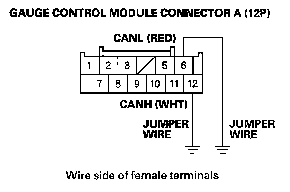
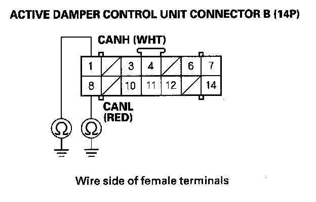

B1188
DTC B1188: Gauge Control Module Lost Communication with Active Damper System Control Unit (Active Damper System Message)1. Clear the DTCs with the HDS.
2. Turn the ignition switch OFF, and then back ON (II).
3. Wait for 6 seconds or more.
4. Check for DTCs with the HDS.
Is DTC B1188 indicated?
YES - Go to step 5.
NO - Intermittent failure, the system is OK at this time. Check for loose or poor connections between the gauge control module and the active damper control unit.
5. Check for active damper system DTCs with the HDS.
Are there any DTCs indicated?
YES - Go to the indicated DTCs, then recheck.
NO - Go to step 6.
6. Turn the ignition switch OFF.
7. Disconnect the gauge control module connector A (12P).
8. Disconnect the active damper control unit connector B (14P).

9. Connect the gauge control module connector A (12P) connector No. 6 and No. 12 terminals to body ground with jumper wires.

10. Check for continuity between the active damper control unit connector B (14P) No. 1 and No. 8 terminals and body ground respectively.
Is there continuity?
YES - Substitute a known-good active damper control unit, and recheck. If the indication goes away, replace the original active damper control unit. If the DTC is still present, replace the gauge control module.
NO - Repair open in the wire.